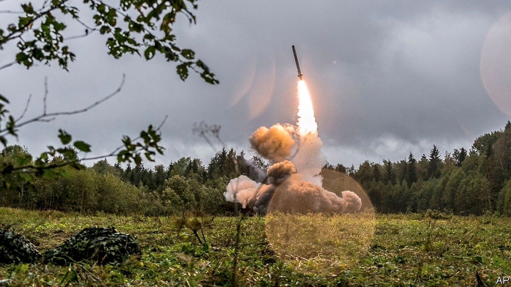
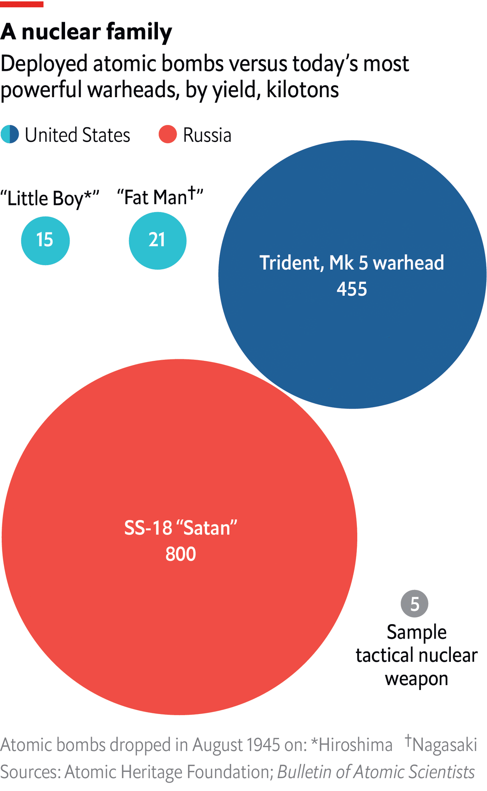

Do Russia’s military setbacks increase the risk of nuclear conflict?
Tactical nuclear weapons are smaller, but using them would carry huge risks

THE SPECTACULAR collapse of Vladimir Putin’s army in Kharkiv province has revived concerns that Russia might resort to nuclear weapons. “I fear that they will strike back now in really unpredictable ways,” warned Rose Gottemoeller, a former deputy secretary-general of NATO, “and ways that may even involve weapons of mass destruction.” Ms Gottemoeller, speaking to the BBC, said she was not worried about Russia’s massive intercontinental ballistic missiles, which cross oceans and can destroy cities, but its so-called tactical nuclear weapons. What are these, and might Mr Putin use them if he is losing the war?
Tactical nuclear weapons (experts prefer the term “non-strategic”) are those with relatively small yields. They can weigh in at a few kilotons, or less. The yield of a B61-12, an American weapon with a variable yield, can be “dialled down” as low as 0.3 kilotons if it is to be used as a tactical weapon—around one-fiftieth of the yield of the bomb which destroyed Hiroshima. The explosion of a few thousand tonnes of badly stored ammonium nitrate in Beirut in August 2020 showed how terrible such blasts can be. But they are far less devastating than those of the weapons used in an all-out nuclear exchange.
America has around 100 tactical nuclear weapons at air bases in Europe, primarily as a way to give its NATO allies a stake in nuclear deterrence. Russia is thought to have thousands. It views them as a way of compensating for NATO’s strength in advanced conventional arms. Their military utility is fairly limited. Today’s conventional (that is, non-nuclear) precision-guided weapons are highly accurate and can destroy most targets, other than the most deeply buried command posts and bunkers.
To be sure, Russia’s precision munitions have often missed their target in this war, and are running short. But tactical nuclear weapons would not be a viable substitute: huge numbers would have to be used to produce a lasting military effect. One study of India-Pakistan scenarios concludes that a five-kiloton nuclear bomb might destroy as few as 13 tanks if they were dispersed. In any event, Russia has shown vanishingly little ability to locate and strike moving targets.
The fear is less that Russia would use them for battlefield gain than as instruments of coercion. Christopher Chivvis, who served as America’s top intelligence official for Europe between 2018 and 2021, says that in various war games held after Russia’s annexation of Crimea in 2014 the Western experts and military officers playing Russia sometimes chose to conduct nuclear tests or a high-altitude detonation of the sort which interferes with communications over a wide area. “Think of an explosion that makes the lights go out over Oslo,” he says. Ms Gottemoeller points to the possibility of a single strike over the Black Sea or on a Ukrainian military facility. “The goal,” she suggested, “would be to get the Ukrainians, in their terror, to capitulate.”

It would be hard to square this with Russia’s stated policy. In recent years it has raised the threshold of nuclear use, from “situations critical for the national security of the Russian Federation” (in 2000) to something more stringent: “aggression…involving the use of conventional weapons when the very existence of the state is under threat” (in 2014). It is possible, however, that Mr Putin identifies the survival of his own regime with that of the state, and sees defeat in Ukraine as an existential matter. If Russia’s army were routed in southern Ukraine to such a degree that Ukrainian forces threatened to recapture Crimea, that, too, could lead Mr Putin to take greater risks.
Even so, those risks would be enormous. A tactical nuclear strike on a Ukrainian base or over the Black Sea would be a seminal moment—the first use of nuclear weapons in anger since 1945—but it would not necessarily halt Ukraine’s offensives. “It is hard to imagine that even nuclear strikes will allow Russia to break Ukraine’s will to resist,” wrote General Valery Zaluzhnyi, Ukraine’s top commander, in a co-authored essay published on September 14th. Any decision to break the nuclear taboo would also jeopardise Russia’s relationship with friendly or non-aligned countries, like China and India. And a strike on Ukraine might lead to precisely the opposite outcome to that sought by Mr Putin since the beginning of the war: the dispatch of Western forces, such as specialist radiological teams, into Ukraine.
Nor is Mr Putin, despite his lurch to dictatorship, Russia’s only decision-maker in this regard. Three officials carry the Cheget, or nuclear briefcase, which transmits orders to rocket forces: Mr Putin, Sergei Shoigu (his defence minister) and General Valeriy Gerasimov (chief of general staff). Some accounts say that two out of the three terminals must send a code for an order to be valid. If such a momentous order were to be disregarded or countermanded, it might have a fatal effect on Mr Putin’s authority.
Much of this is simply unknowable. Arguments over whether Russia would or would not resort to nuclear use have acquired a theological flavour in recent months. One faction argues that the dangers are so great that the West must coax Ukraine’s government into negotiations before things get out of control. Another retorts that the exaggeration of nuclear risks plays into Mr Putin’s hands, deterring the West from sending its most advanced weapons and constraining Ukraine from liberating all of its territory. In truth, the only person in a position to know with any certainty is Mr Putin himself. ■